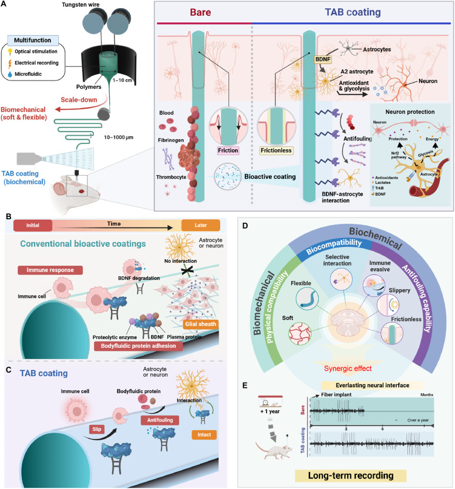

연구 배경과 분류
윤활 표면과 BDNF 고정화를 결합해 비특이적 부착 억제와 신경세포 상호작용을 함께 다룬다. 장기 기록의 표면–조직 반응이 중심이므로 숙주 상호작용에 배치했다.
연구 개요와 핵심 성과
TAB 코팅은 BDNF 고정화와 윤활 표면을 결합해 비특이적 부착을 억제하면서 신경세포와의 선택적 상호작용을 도모한다. 유연한 다기능 섬유에서 평가했다.
물질을 모두 밀어내는 표면의 한계에 대응해 생화학적 상호작용을 추가했다. 생쥐 기록은 코팅하지 않은 섬유와 비교했다.

유연 신경 섬유와 TAB 코팅의 구성, 기존 코팅과의 차이 및 기계적·생화학적 기능을 설명합니다.
Tae Young Kim 외, Science Advances (2025), Figure 1. DOI: 10.1126/sciadv.adz1228. © 2025 The Authors; exclusive licensee AAAS. CC BY-NC 4.0. 원그림 변경 없음.
원그림과 원문 설명 ↗ · DOI ↗ · CC BY-NC 4.0 ↗
비상업적 학술 연구 자료실에서 출처와 CC BY-NC 4.0 표시를 유지하여 재사용합니다. 이 허용을 광고·판매 등 상업적 재사용으로 확대하지 않습니다.
남은 과제
12개월 대표 기록과 8개월 통계 비교를 구분해야 한다. Fig. 6G의 n은 전극 수이므로 독립 동물 수로 읽을 수 없다. 인간 장기 성능은 검증되지 않았다.
비교 조건
편집 제안: 뇌 부위, 삽입 방법, 섬유 형상과 신호 분류 기준을 맞추고, 코팅 효과를 윤활 단독·BDNF 단독 조건과 분리해 평가한다.
관련 외부 연구
Multifunctional fibers for simultaneous optical, electrical and chemical interrogation of neural circuits in vivo
출판사 초록과 서지를 확인했다. Canales 등은 열 인발 섬유에 기록·광학·유체 기능을 통합했다. TAB 연구는 이러한 다기능 섬유 계열의 조직 반응과 표면 생화학 문제에 초점을 더한다.
외부 본문은 미검토다. 기록 기간은 실험 종료 시점의 영향도 받으므로 서로 다른 장치의 기간만으로 수명 개선 배수를 계산하지 않는다.
초록 확인COVERAGE & OUTREACH
보도와 소개
논문과의 연관성을 확인한 소개 자료입니다. 언론 게재는 독립 취재나 실험 결과의 추가 검증을 뜻하지 않습니다.
서정목 교수팀, 뇌-컴퓨터 인터페이스 장기 안정성 극복할 신경 전극 코팅 기술 개발 ↗
TAB·BDNF, 서정목/박성준/김태영/손연주 연구진과 Science Advances가 #85를 식별합니다.
본문 확인 공식 발표의 본문·게시일을 읽었습니다. 장기 기록 성능은 기사 내용을 연구 연결에만 사용했습니다.
Bioadaptive Liquid-Infused Multifunctional Fibers for Long-Term Neural Recording via BDNF Stabilization and Enhanced Neural Interaction ↗
정확한 논문 제목과 박성준 교수, TAB·BDNF 내용 및 원문 DOI 링크가 일치합니다.
본문 확인 영문 Research Highlights 본문을 읽었습니다. 표시된 절대 게시일을 찾지 못해 날짜는 비워 두었습니다.
뇌·컴퓨터 인터페이스 신호 1년 이상 기록한다 ↗
기사에 정확한 DOI 10.1126/sciadv.adz1228이 명시되며 TAB·연구진이 일치합니다.
본문 확인 기사 본문과 게시일을 읽었습니다. 기관 자료와 연구 설명·인용이 겹치는 발표 기반 보도이며 독립 취재로 집계하지 않았습니다.
[22일 대학가] 세종대·중앙대·한양대·연세대 ↗
연세대 소제목 아래 TAB·BDNF와 서정목·박성준 연구진, Science Advances 연구가 #85와 일치합니다.
부분 본문 확인 기사의 게시일과 연세대 연구 구간을 읽었습니다. 다른 대학의 연구·행사는 관련 논문으로 묶지 않았습니다. 연세대 발표의 설명과 인용을 재전달합니다.
New paper on neural recording technology published in Science Advances ↗
정확한 제목과 DOI 10.1126/sciadv.adz1228, TAB 및 공동저자가 직접 명시됩니다.
본문 확인 공개 게시물 본문과 연결된 논문 제목을 확인했습니다. 상대적 게시 시각만 보여 절대 날짜는 확정하지 않았습니다. 저자의 연구 홍보이며 독립 검증 자료는 아닙니다.
미확인 후보와 접근 제한 (1)
미확인 후보 · Bioadaptive liquid-infused multifunctional fibers for long-term neural recording via BDNF stabilization and enhanced neural interaction ↗
검색 결과의 발표 제목은 논문과 일치하지만 발표 본문과 저자 대조는 보류했습니다.
본문 접근 제한 발표 세부 페이지 열기가 실패했습니다. 검색 제목만의 후보이며 확인 링크 수에 포함하지 않았습니다.
근거와 확인 범위
공개 웹에서는 PubMed 서지·초록·그림 설명을 확인했다. 출판사와 PMC 본문 접근 오류로, 제목·DOI가 일치하는 기존 로컬 출판사 PDF의 신경 기록 결과·Discussion·Fig. 6을 검토했다(local_pdf_read). 보충자료와 원데이터는 미검토다.
- 원본 공개 논문 목록 ↗ · #85 · 2026-10-03
- Crossref metadata ↗: Crossref에 등록된 공개 서지 메타데이터만 확인했습니다. 출판사 페이지·초록·본문을 읽었다는 뜻이 아니며, 학교 Chrome 전문 검증은 보류입니다. Crossref에 라이선스 링크가 없으며 재배포 권리는 확인되지 않았습니다.
- Bioadaptive liquid-infused multifunctional fibers for long-term neural recording via BDNF stabilization and enhanced neural interaction ↗
public_web_abstract_and_captions · Bibliographic record; Abstract; Figs. 1-6 captions. DOI 10.1126/sciadv.adz1228, Science Advances 11(37), eadz1228. Checked 2026-10-03. - Matching local publisher PDF: TAB-coated multifunctional fibers ↗
local_pdf_read · PDF/article p. 11: Long-term electrophysiology recording and Discussion; p. 12: Fig. 6G-I (electrode counts and analysis window); p. 1 and final article-information page: title/DOI and CC BY-NC statement. Publisher/PMC public-web full text not verified.